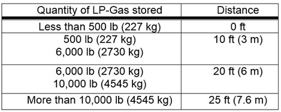

09.C Liquefied Petroleum Gas (LP-Gas)
09.C.01–09.C.12
09.C.01 Storage, handling, installation, and use of LP-Gas and systems shall be in accordance with NFPA Standard 58 and USCG regulations, as applicable.
09.C.02 LP-Gas containers, valves, connectors, manifold valve assemblies, regulators, and appliances shall be of an approved type.
09.C.03 Any appliance that was originally manufactured for operation with a gaseous fuel other than LP-Gas and is in good condition may be used with LP-Gas only after it is properly converted, adapted, and tested for performance with LP-Gas.
09.C.04 Polyvinyl chloride and aluminum tubing shall not be used in LP-Gas systems.
09.C.05 Safety devices.
- Every container and vaporizer shall be provided with one or more safety relief valves or devices. These valves and devices shall be arranged to afford free vent to the outside air and discharge at a point not less than 5 ft (1.5 m) horizontally from any building opening that is below the discharge point.
- Container safety relief devices and regulator relief vents shall be located not less than 5 ft (1.5 m) in any direction from air openings into sealed combustion system appliances or mechanical ventilation air intakes.
- Shut-off valves shall not be installed between the safety relief device and the container, or the equipment or piping to which the safety relief device is connected, except that a shut-off valve may be used where the arrangement of the valve is such that full required capacity-flow through the safety relief device is always afforded.
09.C.06 Container valves and accessories.
- Valves, fittings, and accessories connected directly to the container, including primary shut off valves, shall have a rated working pressure of at least 250 psi (1723.6 kPa) gauge and shall be of material and design suitable for LP-Gas service.
- Connections to containers (except safety relief connections, liquid level gauging devices, and plugged openings) shall have shutoff valves located as close to the container as practical.
09.C.07 Multiple container systems.
- Valves in the assembly of multiple container systems shall be arranged so that replacement of containers can be made without shutting off the flow of gas in the system (this is not to be construed as requiring an automatic changeover device).
- Regulators and low-pressure relief devices shall be rigidly attached to the cylinder valves, cylinders, supporting standards, building walls, or otherwise rigidly secured and shall be installed or protected from the elements.
09.C.08 LP-Gas containers and equipment shall not be used in unventilated spaces below grade in pits, below-decks, or other spaces where dangerous accumulations of heavier-than-air gas may accumulate due to leaks or equipment failure.
09.C.09 Welding is prohibited on LP-Gas containers.
09.C.10 Dispensing.
- Equipment using LP-Gas shall be shut down during refueling operations.
- Filling of fuel containers for motor vehicles from bulk storage containers shall be performed not less than 10 ft (3 m) from the nearest masonry-walled building, not less than 25 ft (7.6 m) from the nearest building of other construction, and, in any event, not less than 25 ft from any building opening.
- Filling, from storage containers, of portable containers or containers mounted on skids shall be performed no less than 50 ft (15.2 m) from the nearest building.
09.C.11 Installation, use, and storage outside buildings.
- Containers shall be upright upon firm foundations or otherwise firmly positioned. Flexible connections (or other special fixtures) shall be provided to protect against the possibility of the effect of settlement on the outlet piping.
- Containers shall be in a suitable ventilated enclosure or otherwise protected against tampering.
- Storage outside buildings, of containers awaiting use, shall be located from the nearest building or group of buildings in accordance with Table 9-2.
- Storage areas shall be provided with at least one approved portable fire extinguisher rated no less than 20-B:C.
TABLE 9-2
Outside Storage of LP-Gas Containers and Cylinders - Minimum Distances

09.C.12 Installation, use, and storage inside of buildings.
- Storage of LP gas containers (empty or full) in industrial buildings (not normally frequented by the public) shall not exceed 300 lbs (2,598 ft3 in vapor form). When stored inside, empty containers which have been in LP-Gas service shall be considered as full containers for the purpose of determining the maximum quantity of LP-Gas permitted.
▸Exemption: A total of 5 one-pound propane cylinders may be stored indoors as long as they are stored away from exits and stairways, or in areas normally used for the safe exit of people.
- Containers stored inside shall not be located near exits, stairways, or in areas normally used for the safe exit of people.
- Container valves shall be protected while in storage as follows: by setting into recess of container to prevent the possibility of it being struck if the container is dropped upon a flat surface, or by ventilated cap or collar fastened to the container capable of withstanding blow from any direction equivalent to that of a 30 lb (13.6 kg) weight dropped 4 ft (1.2 m).
- Outlet valves of containers in storage shall be closed.
- Storage locations shall be provided with at least one approved portable fire extinguisher having a minimum rating of 8-B:C.
- Containers, regulating equipment, manifolds, pipe, tubing, and hose shall be located to minimize exposure to high temperatures or physical damage.
- The maximum water capacity of individual containers shall be 245 lb (111.1 kg), nominal 100 lb (45.3 kg), LP-Gas capacity.
- Containers having a water capacity greater than 2.5 lb LP-Gas capacity (1.1 kg), (nominal 1 lb (0.4 kg), that are connected for use shall stand on a firm and substantially level surface and, when necessary, shall be secured in an upright position. Systems using containers having a water capacity greater than 2.5 lb shall be equipped with excess flow valves internal either with the container valves or in the connections to the container valve outlets.
- Regulators shall be directly connected to either the container valves or to manifolds connected to the container valves. The regulator shall be suitable for use with LP-Gas. Manifolds and fittings connecting containers to pressure regulator inlets shall be designed for at least 250 psi (1723.6 kPa) gauge service pressure.
- Valves on containers having water capacity greater than 50 lb (22.6 kg) (nominal 20 lb (9 kg) LP-Gas capacity) shall be protected from damage while in use or storage.
- Hoses shall be designed for working pressure of at least 250 psi (1723.6 kPa) gauge. Design, construction, and performance of hoses and connections shall have been suitability determined by listing by a nationally recognized testing agency. Hose length shall be as short as possible but long enough to permit compliance with spacing requirements without kinking, straining, or causing the hose to be so close to a burner as to be damaged by heat.
{kind=link}